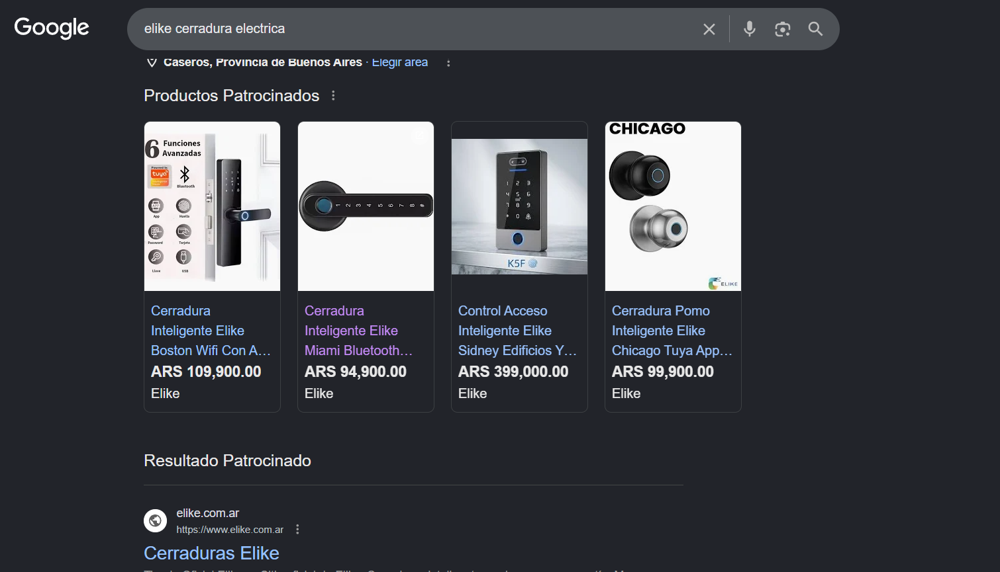
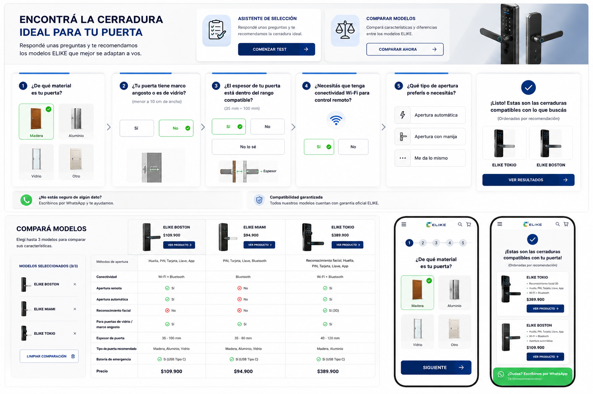
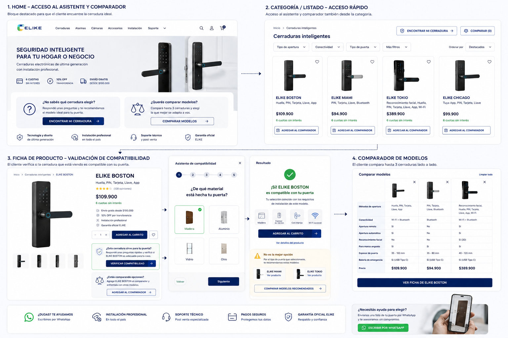

Duda
“¿Sirve para mi puerta?”
Propuesta complementaria · Optimización ELIKE
Una experiencia de compra diseñada para responder una pregunta decisiva: ¿esta cerradura sirve para mi puerta?
Huella · PIN · App · Tarjeta · Llave
Respondé unas preguntas y verificá compatibilidad antes de comprar.
Durante la reunión, Gustavo planteó una necesidad concreta: incorporar preguntas guiadas que ayuden al cliente a validar si una cerradura es adecuada para su puerta y, además, facilitar la comparación entre modelos antes de decidir.
A partir de ese desafío, VIA CLOUD investigó referencias del mercado, aplicaciones disponibles para Tiendanube y una alternativa de desarrollo propio para convertir la idea en un diferencial real dentro de ELIKE.
ELIKE comercializa productos donde la elección no depende únicamente del diseño, el precio o la cantidad de funciones. El tipo de puerta, material, espesor, dimensiones y características de instalación pueden determinar qué modelo resulta adecuado.
“¿Sirve para mi puerta?”
“¿Qué diferencia hay entre estos modelos?”
“¿Cuál debería comprar?”
La propuesta no busca agregar una función decorativa. Busca resolver una objeción real en el momento en que aparece.
Estas referencias no se presentan como modelos a copiar, sino como evidencia de que la compatibilidad, la información técnica y la comparación ya son parte de la decisión de compra en cerraduras inteligentes.
Su FAQ responde si las cerraduras son adecuadas para distintos tipos de puerta, mencionando material y rangos de espesor.
Nuestra evolución:Llevar esa respuesta desde una FAQ estática hacia una validación interactiva.
Ver referenciaLa ficha informa compatibilidad con puertas de 38 a 65 mm, puertas de madera o metal, backset y opciones de instalación.
Nuestra evolución:Que el usuario no tenga que interpretar toda esa información solo.
Ver referenciaPresenta métodos de desbloqueo, app, alertas, códigos temporales y especificaciones técnicas mediante bloques visuales.
Nuestra evolución:Sumar una capa de decisión guiada, no solo una ficha descriptiva.
Ver referenciaEn categorías amplias, el usuario necesita comparar alternativas y reducir el esfuerzo de decisión entre modelos similares.
Nuestra evolución:Priorizar diferencias relevantes para elegir una cerradura, no solo listar productos.
Ver referencia¿Qué cerradura necesito?
¿Sirve para mi puerta?
Modelos compatibles
Diferencias clave
Compra o WhatsApp

Un visitante puede llegar directamente desde Google Ads o Shopping a un producto específico. Por eso, la pregunta de compatibilidad no debería depender de que el usuario haya pasado antes por la Home.
Primero mostramos las fichas visuales completas que acercan la propuesta a una experiencia real de ELIKE. Luego, los tabs permiten recorrer cada pieza por separado.
Esta placa muestra el sistema como diferencial protagonista: preguntas guiadas, resultado recomendado, comparador de modelos y adaptación mobile.

Esta vista ayuda a explicar que la solución no vive aislada: aparece en puntos clave del recorrido y acompaña al cliente hasta la decisión.

Cerraduras inteligentes ELIKE
Objetivo: convertir incertidumbre inicial en intención de compra.
Objetivo: permitir comparación mientras el cliente explora la categoría.
Huella · PIN · App · Tarjeta · Llave
Respondé unas preguntas rápidas y verificá si este modelo es adecuado.
Objetivo: resolver la objeción donde ocurre, especialmente en tráfico directo a producto.
Paso 2 de 4
Objetivo: traducir requisitos técnicos en preguntas simples.
Las condiciones informadas coinciden con los requisitos principales.
Por las características de tu puerta, estos modelos podrían adaptarse mejor.
No podemos confirmar automáticamente la compatibilidad con la información disponible.
Objetivo: evitar falsos positivos y convertir incertidumbre en consulta comercial.
| Característica | Boston | Tokio |
|---|---|---|
| Huella | Sí | Sí |
| Código PIN | Sí | Sí |
| Wi-Fi | Sí | Sí |
| Reconocimiento facial | No | Sí |
| Tipo de puerta | A validar | A validar |
| Espesor | Rango ELIKE | Rango ELIKE |
Objetivo: priorizar diferencias que afectan la decisión, no todas las especificaciones.
Paso 1 de 4
Las reglas finales deben definirse junto a ELIKE para garantizar recomendaciones técnicamente correctas.
Las preguntas y reglas reales deberán validarse previamente con ELIKE antes de implementar cualquier recomendación automática.
Tablas de comparación personalizables, atributos destacados y diseño adaptable a la tienda.
Valores relevados: USD 15/mes básico · USD 30/mes premium*Aplicación de formularios o recomendación con lógica condicional para guiar al usuario.
Referencia relevada: aprox. USD 19/mes*, a confirmar con proveedor y app exacta.Implementación más rápida, menor desarrollo inicial y mantenimiento principal del proveedor.
Dependencia externa, cargos recurrentes y personalización condicionada por cada app.
Construir el sistema directamente sobre el storefront permite diseñar la experiencia alrededor del catálogo ELIKE, en lugar de adaptar ELIKE a una herramienta genérica.
Confirmar el plan actual de Tiendanube de ELIKE y su disponibilidad de acceso al código fuente antes de definir la modalidad definitiva de implementación.
* Precios y planes son referenciales, relevados para análisis comercial. Deben confirmarse al momento de contratar porque pueden cambiar por proveedor, país, plan o condiciones vigentes.
| Criterio | Apps Tiendanube | Desarrollo ELIKE |
|---|---|---|
| Tiempo inicial | Alto | Medio |
| Personalización | Media | Muy alta |
| Compatibilidad técnica | Media / depende | Alta, con reglas propias |
| Integración visual | Media | Muy alta |
| Asistente + comparador unidos | Depende | Sí |
| WhatsApp contextual | Limitado / depende | Sí |
| Dependencia externa | Alta | Baja |
| Costos recurrentes de apps | Posibles | No necesariamente |
| Evolución futura | Condicionada | Alta |
| Desarrollo inicial | Bajo / medio | Medio / alto |
VIA CLOUD STUDIO propone evaluar técnicamente ambas alternativas antes de tomar una decisión. Las aplicaciones pueden permitir una implementación rápida y son una buena herramienta para validar la experiencia. Si sus restricciones de personalización, integración o lógica condicionan el resultado, el desarrollo propio aparece como la alternativa más sólida para construir una experiencia diseñada alrededor de ELIKE.
La tecnología es el medio. El objetivo es que menos clientes abandonen una compra porque no saben qué cerradura elegir.
Confirmar plan Tiendanube, acceso a código fuente, theme y restricciones.
Definir compatibilidades reales por modelo, puerta, espesor, instalación y conectividad.
Diseñar flujo de preguntas, resultados, comparador y derivación a WhatsApp.
Elegir apps o desarrollo propio, integrar en Home, categoría y ficha.
Probar mobile, escenarios técnicos, eventos de analítica y conversión.
Cierre
La propuesta toma la necesidad planteada por Gustavo y la transforma en una solución concreta: guiar, validar, recomendar y comparar antes de que el cliente abandone la compra o compre con incertidumbre.
Compartir propuesta